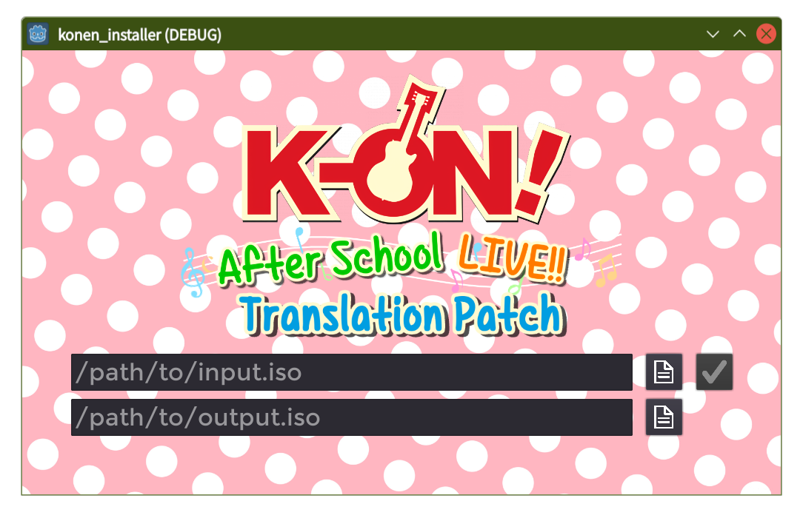
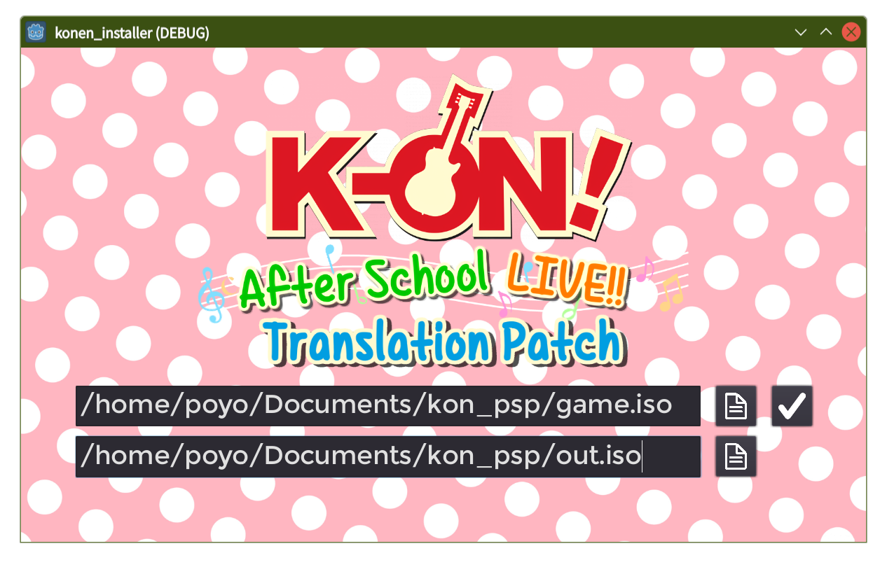
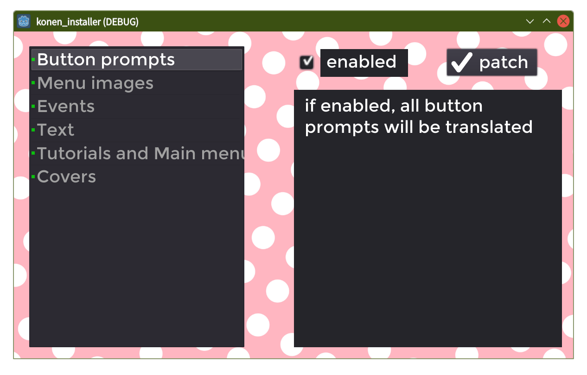
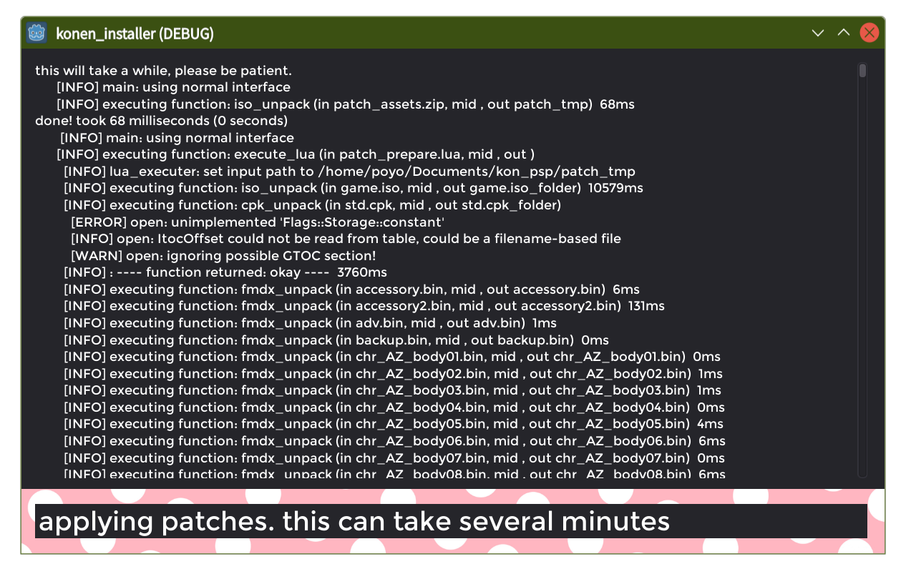
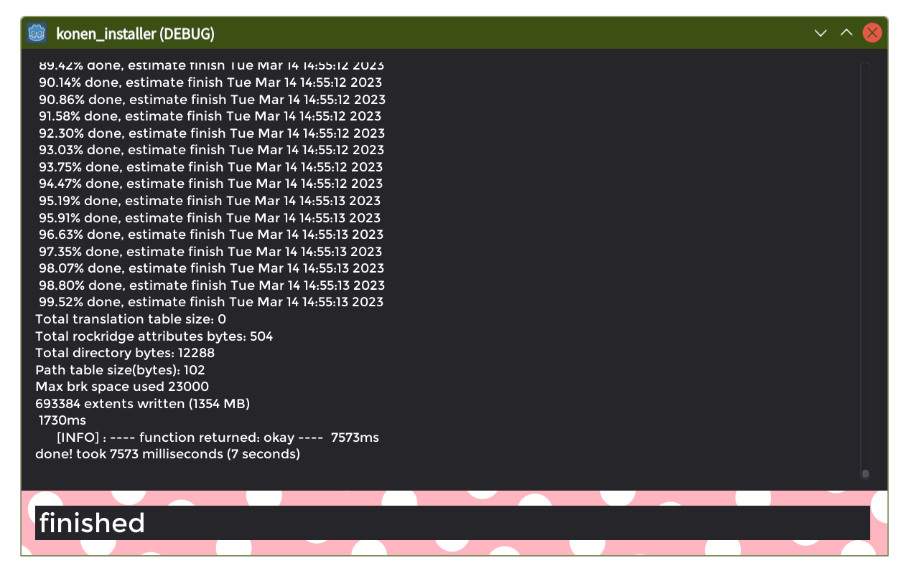

Installer instructions for Linux:
Video guide available here:
Text Guide:
Some important information: You'll need about 5GB of free space on the drive that your input .iso file is located.
Your window manager may say the application is "not responding" when it's patching, but that's expected. Simply wait a few minutes for it to complete.
Patching time will vary wildly based on how fast your HDD or SSD is. It will complete significantly faster on SSD than on HDD, so move your input file here if you have one.
Page 1:
Download the installer from
the main page
Open the installer, you should see the following:

Fill in the first text bar with the path of your input .iso file. Click the file icon on the right to bring up a file browser.
Now fill the bottom text bar with the path to where you want to save it. Again, you can click the file icon on the right to bring up a file browser.
Here's an example of how it might look when filled out:

Hit the check mark to go to page 2.
Page 2:

If you don't want to turn off any parts of the translation, hit "patch" to continue to page 3.
On this page you can select any of the parts of the patch from the list on the left.
Once selected, you'll see a description of what it does, and you can then turn it on or off with the checkbox on the top.
You can customize your patch here, and once you're done, hit "patch" to continue to page 3.
Page 3:

Now it's simply a matter of waiting until the bar on the bottom says "finished":

Again, while patching, your window manager may say the program is not responding, but the program will still be working in the background.
Just wait patiently until it's done. (this will take between 2 - 10 minutes, depending on the speed of the drive it's on.)